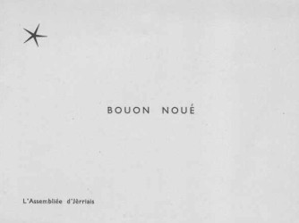

La Poste dé Jèrri nos ramémouaithe qu'i' faut env'yer ses cartes dé Noué, ses présents et ses lettres bein d'vant lé vîngt-chîn d'Dézembre. Les cheins tchi veulent env'yer un patchet par la tèrre et la mé en Australie éthaient deu l'faithe par lé vîngt-sept dé Septembre, mais nou-s'étha jusqu'au six d'Dézembre pouor l'enviêthie hors Ûrope par avion (et jusqu'au dgix d'chu mais-là pouor l'Ûrope, lé Japon, l's Êtats-Unnis et l'Cannada).
Aut'fais i' fallait penser à la boutiqu'sie d'Noué avant la tchête des fielles, et pis s'affaither auve la paqu'sie, lé gris papi et l'fi patcheux, avant dé s'fliantchi à la poste à seule fîn dé n'pas mantchi la dreine date d'enviêthie. Mais un cliou mîns en temps, coumme nou dit, sauve la reue, et la technologie d'achteu peut bein sauver d'la peine, des maux d'tête - et des maux d'pids étout.
Y'a des gens tchi trouvent qu'la boutiqu'sie en lîngne aîgue divèrsément auve tout l'train d'env'yer les présents. Pouor les CDs et les livres, nou peut les chouaîsi en lîngne et l's aver patchi coumme présent, et s'u-s'acate dé sus un site Améthitchain, par exempl'ye, bein seu qu'i' s'sont d'livrés d'un stôrre en Améthique et v'là tch'est d'charme pouor un présent d'la dreine minnute ou pouor un couôsîn oublié.
Même si nou pouôrrait parfais oublier un couôsîn Cannadgien ou Australien, i' n'faut pon oublier qu'la dreine date pouor env'yer des patchets d'Noué au Rouoyaume Unni est l'tchînze dé Dézembre, et pouor les lettres, ch'est l'dgiêx-huit. I' faudra poster ses cartes dé Noué à ses anmîns Jèrriais et sa fanmil'ye en Jèrri pouor la dreine date tch'est l'vîngt-trais d'Dézembre – mais n'oubliez pon d'êcrithe vos souhaits en Jèrriais. Bouan Noué et Bouanne Année!
Viyiz étout: